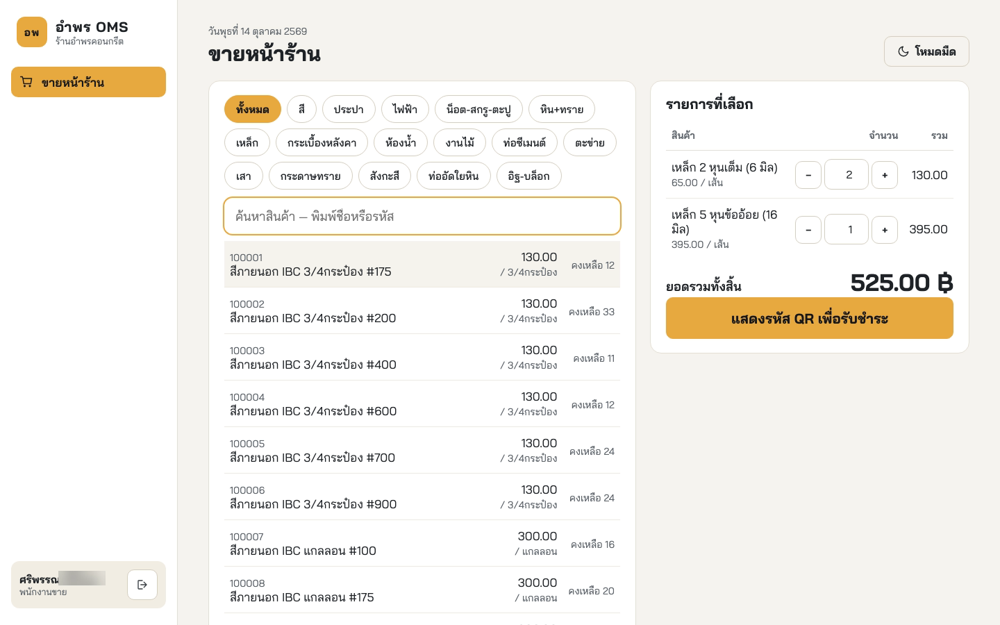

ปริญญานิพนธ์ · SE-4
ระบบจัดการคำสั่งซื้อและ
ตรวจสอบคลังสินค้า
กรณีศึกษา ร้านวัสดุก่อสร้างอำพรคอนกรีต
Order Management and Inventory Control System: A Case Study of Amporn Concrete Construction Materials Store
นายตรัยรัตน์ วงษ์สิทธิ์ 67543210028-6
นายพนาวุฒน์ อภิปสันติ 67543210040-1
อาจารย์ที่ปรึกษา อาจารย์ธนิต เกตุแก้ว
Node.js + ExpressReact + ViteMySQL InnoDBWebSocket + SSEESC/POS · PromptPay QR
สาขาวิศวกรรมซอฟต์แวร์
คณะวิศวกรรมศาสตร์
มหาวิทยาลัยเทคโนโลยีราชมงคลล้านนา
ปีการศึกษา 2569
บทที่ 1 · ที่มาของปัญหา
ปัญหาแยกตามผู้มีส่วนได้ส่วนเสีย (Stakeholder)
4 กลุ่ม · 9 หลักฐาน
พนักงานขาย
EV-01เขียนบิลกระดาษ คิดยอดเอง ผิดได้
EV-03หน้าร้านกับคลังอยู่คนละที่ แจ้งคลังทันทีไม่ได้
ระบบแก้ด้วยระบบคิดยอดจากราคาในฐานข้อมูล ออก QR และพิมพ์ใบเสร็จ
พนักงานคลัง
EV-05อ่านบิลด้วยสายตา หยิบผิดชนิด ผิดจำนวน
EV-06มีคนเอาบิลเก่ามารับของซ้ำ
EV-07ยอดสต็อกในบันทึกไม่ตรงของจริง
ระบบแก้ด้วยคิวขึ้นจอเอง ยืนยันจ่ายจากรายการ ใบเดียวจ่ายได้ครั้งเดียว ตัดสต็อกอัตโนมัติ
ผู้จัดการ (เจ้าของร้าน)
EV-02ข้อมูลการขายกระจัดกระจาย ตรวจย้อนหลังยาก
EV-08รอสรุปยอดและนับสต็อกด้วยมือตอนท้ายวัน
EV-09สั่งของจากความรู้สึก ไม่มีข้อมูลจริง
ระบบแก้ด้วยแดชบอร์ดระหว่างวัน แจ้งเตือนของใกล้หมด ค้นประวัติย้อนหลัง
ลูกค้า
EV-04ต้องถือใบเสร็จเดินไปโกดังเอง รอนานช่วงคนเยอะ
ระบบแก้ด้วยคลังเห็นคำสั่งซื้อทันทีที่จ่ายเงิน เริ่มจัดของก่อนลูกค้าเดินไปถึง
ได้จากการสังเกตการทำงานจริงที่ร้าน สัมภาษณ์เจ้าของร้าน และสอบถามพนักงาน (ตารางที่ 3.1) · ลูกค้าไม่ได้ใช้ระบบเอง แต่ได้ประโยชน์จากการรอน้อยลง
อยู่ในเล่ม: หลักฐาน EV-01 ถึง EV-09 ตารางที่ 3.2 หน้า 25 · ผู้ใช้ 3 บทบาท ตารางที่ 3.3
อำพร OMS | ระบบจัดการคำสั่งซื้อและตรวจสอบคลังสินค้า · ร้านวัสดุก่อสร้างอำพรคอนกรีต1
บทที่ 1 · บทนำ
วัตถุประสงค์ของโครงงาน
วัตถุประสงค์เชิงผลิตภัณฑ์ (วัดผลได้)
ข้อ 1 ลดข้อผิดพลาดจากเอกสารกระดาษ ยอดเงินทุกใบคำนวณโดยระบบ
ข้อ 2 ลดเวลารอ คำสั่งซื้อที่ชำระแล้วถึงจอคลังภายใน 3 วินาที
ข้อ 3 ยอดสต็อกตรงของจริง ใบเดียวจ่ายได้ครั้งเดียวแม้กดพร้อมกัน
ข้อ 4 ผู้บริหารเห็นยอดขาย สต็อก คิวงาน แบบเรียลไทม์ และได้แจ้งเตือนของใกล้หมด
วัตถุประสงค์เชิงการเรียนรู้
ข้อ 5 ฝึกวิศวกรรมความต้องการตั้งแต่เก็บหลักฐานหน้างาน จนถึงทดสอบ โดยทุกความต้องการสอบกลับได้
ข้อ 6 ฝึกออกแบบและพัฒนาระบบหลายหน่วยติดตั้ง ที่ทนต่อการทำรายการพร้อมกันของผู้ใช้หลายคน
อยู่ในเล่ม: หัวข้อ 1.2 หน้า 2
อำพร OMS | ระบบจัดการคำสั่งซื้อและตรวจสอบคลังสินค้า · ร้านวัสดุก่อสร้างอำพรคอนกรีต2
บทที่ 1 · บทนำ
ขอบเขตของโครงงาน
อยู่ใน 8 · ไม่อยู่ 8
3บทบาทผู้ใช้
11กรณีการใช้งาน UC-01–11
4หน่วยติดตั้ง
783รายการสินค้าจริงของร้าน
| ✓ อยู่ในขอบเขต | ✗ ไม่อยู่ในขอบเขต (งานต่อยอด) |
|---|
| เข้าสู่ระบบและควบคุมสิทธิ์ตามบทบาท | ระบบบัญชีเต็มรูปแบบ |
| จัดการข้อมูลสินค้าและตั้งจุดสั่งซื้อเพิ่ม | ชำระเงินผ่านเพย์เมนต์เกตเวย์หรือเครื่องรูดบัตร |
| สร้างคำสั่งซื้อ แสดง QR พร้อมเพย์ และพิมพ์ใบเสร็จความร้อน | ตรวจสถานะการชำระเงินอัตโนมัติกับธนาคาร |
| ส่งคำสั่งซื้อเข้าคิวคลังแบบเรียลไทม์ | แอปพลิเคชันเนทีฟบนมือถือ |
| ยืนยันจ่ายสินค้า ตัดสต็อกแบบอะตอมมิก และกันจ่ายซ้ำ | เชื่อมระบบ ERP หรือซัพพลายเออร์ภายนอก |
| แดชบอร์ดปฏิบัติการและแดชบอร์ดระดับบริหาร | แจ้งเตือนผ่านอีเมลหรือแอปสนทนา |
| บันทึกและค้นหาประวัติการทำรายการ | ใบสั่งซื้อสินค้าจากซัพพลายเออร์ |
| แจ้งเตือนในแอปเมื่อสินค้าใกล้หมดและคิวค้าง | โมดูลปัญญาประดิษฐ์ช่วยวิเคราะห์ |
ขอบเขตตั้งจากปัญหาจริงที่ร้าน (EV-01 ถึง EV-09) ทำครบเส้นทางขาย → คิว → จ่าย → ตัดสต็อก → แดชบอร์ด ให้ลึกจริง เว็บแอปเรสปอนซีฟ ติดตั้งบนคอมของร้าน
อยู่ในเล่ม: หัวข้อ 1.3 ตารางที่ 1.1 หน้า 2–3
อำพร OMS | ระบบจัดการคำสั่งซื้อและตรวจสอบคลังสินค้า · ร้านวัสดุก่อสร้างอำพรคอนกรีต3
บทที่ 3 · การวิเคราะห์และออกแบบ
เก็บความต้องการอย่างไร
4 วิธี
| วิธีเก็บความต้องการ | ผู้ให้ข้อมูล | ได้อะไร |
|---|
| สังเกตการทำงานจริงที่หน้าร้านและคลัง | พนักงานขาย พนักงานคลังสินค้า | เห็นขั้นตอนจริง จุดที่รอ จุดที่ผิด |
| สัมภาษณ์เจ้าของร้าน | ผู้จัดการ (เจ้าของร้าน) | ปัญหาสรุปยอด สต็อก การสั่งของ |
| สอบถามพนักงาน | พนักงานขาย พนักงานคลังสินค้า | ปัญหาบิล หยิบผิด รับของซ้ำ |
| ตรวจเอกสารเดิมของร้าน | ไฟล์รายการสินค้า และบิลกระดาษ | สินค้าจริง 783 รายการ รูปแบบบิลเดิม |
หลักฐาน EV 9 ข้อ→FR 9 · NFR 9→Use Case 11→หน้าจอ 9→ตาราง 7→กรณีทดสอบ 13
อยู่ในเล่ม: 3.2.1 ตารางที่ 3.1 หน้า 25 · หลักฐานตารางที่ 3.2
อำพร OMS | ระบบจัดการคำสั่งซื้อและตรวจสอบคลังสินค้า · ร้านวัสดุก่อสร้างอำพรคอนกรีต4
บทที่ 1 · กระบวนการพัฒนา
กระบวนการ Iterative Waterfall และเหตุผลที่เลือก
6 ระยะ · 6 เดือน
| ระยะ | ทำอะไร | เดือน | หมุดหมาย |
|---|
| 1 วิเคราะห์ความต้องการ | สำรวจปัญหาหน้างาน สัมภาษณ์ กำหนด FR NFR และขอบเขต | 1 | M1 เอกสารความต้องการ |
| 2 ออกแบบระบบ | C1 C2 C3 · Use Case · ER · ต้นแบบหน้าจอ | 2 | M2 เอกสารออกแบบ |
| 3 พัฒนาระยะที่ 1 | เข้าสู่ระบบ สินค้า สร้างคำสั่งซื้อ QR เครื่องพิมพ์ | 3 | M3 ต้นแบบระยะที่ 1 |
| 4 พัฒนาระยะที่ 2 | คิวเรียลไทม์ ยืนยันจ่ายและตัดสต็อก ประวัติ | 4 | M4 ต้นแบบระยะที่ 2 |
| 5 แดชบอร์ดและแจ้งเตือน | แดชบอร์ด แจ้งเตือนในแอป จุดสั่งซื้อเพิ่ม | 5 | M5 รุ่นสมบูรณ์สำหรับทดสอบ |
| 6 ทดสอบและประเมินผล | ทดสอบการทำงาน ประสิทธิภาพ UAT และทำเล่ม | 6 | M6 ผลทดสอบและเล่ม |
ทำไมเลือก Iterative Waterfall
ขอบเขตชัดตั้งแต่ต้นจากหลักฐานหน้างาน ผู้ใช้มีไม่กี่คน ไม่ต้องเปลี่ยนความต้องการบ่อยแบบ Scrum
ต้องทำตามลำดับ ระยะ 4 (ยืนยันจ่าย) ต้องใช้คำสั่งซื้อจากระยะ 3 ก่อน
ความเสี่ยงหลักคือข้อมูลถูกต้องตอนหลายคนกดพร้อมกัน ต้องออกแบบให้ชัดก่อนเขียนโค้ด
"ทวนกลับได้" คือย้อนไปแก้ระยะก่อนได้ ทำจริง 2 ครั้ง: DF-01 และ DF-03
อยู่ในเล่ม: 1.4 หน้า 4 · ตารางที่ 1.2 · แผนภูมิแกนต์รูปที่ 1.1 หน้า 5
อำพร OMS | ระบบจัดการคำสั่งซื้อและตรวจสอบคลังสินค้า · ร้านวัสดุก่อสร้างอำพรคอนกรีต5
บทที่ 3 · การวิเคราะห์และออกแบบ
ความต้องการ : มาจากใคร + System Requirements
FR 9 · NFR 9
| รหัส | ความต้องการ | มาจากใคร |
|---|
| FR-01 | เข้าสู่ระบบ ควบคุมสิทธิ์ตามบทบาท | ผู้จัดการ (EV-02) |
| FR-02 | จัดการสินค้า ราคา จุดสั่งซื้อเพิ่ม | ผู้จัดการ (EV-09) |
| FR-03 | สร้างคำสั่งซื้อ คิดยอด QR พิมพ์ใบเสร็จ | พนักงานขาย (EV-01) |
| FR-04 | คิวรอจ่ายที่อัปเดตเอง | ขาย · คลัง · ลูกค้า (EV-03, 04) |
| FR-05 | ยืนยันจ่ายจากรายการในคิว | พนักงานคลัง (EV-05) |
| FR-06 | ตัดสต็อกในธุรกรรมเดียว กันจ่ายซ้ำ | พนักงานคลัง (EV-06, 07) |
| FR-07 | แดชบอร์ดยอดขาย สต็อก คิว | ผู้จัดการ (EV-08) |
| FR-08 | แจ้งเตือนของใกล้หมด คิวค้าง | ผู้จัดการ (EV-09) |
| FR-09 | บันทึกและค้นประวัติการทำรายการ | ผู้จัดการ (EV-02) |
System Requirements
ต่อ PromptPay QR Library สร้าง QR ตามยอด (FR-03)
ต่อเครื่องพิมพ์ใบเสร็จความร้อนด้วย ESC/POS ภาษาไทย ภายใน 5 วินาที (NFR-05)
ผลักข้อมูลด้วย WebSocket สำรองด้วย SSE ถึงจอภายใน 3 วินาที (NFR-02)
ตรวจโทเคนและบทบาททุกคำขอ รหัสผ่านแฮช (NFR-01)
ใช้บนมือถือในคลังได้ (NFR-03) รองรับ 10 เซสชัน (NFR-06)
ติดตั้งบนคอมของร้านเครื่องเดียว ไม่ต้องต่ออินเทอร์เน็ต (NFR-09)
อยู่ในเล่ม: ตารางที่ 3.5 หน้า 27 · ตารางที่ 3.8 หน้า 29 · BR-01 ถึง BR-05 ตารางที่ 3.6
อำพร OMS | ระบบจัดการคำสั่งซื้อและตรวจสอบคลังสินค้า · ร้านวัสดุก่อสร้างอำพรคอนกรีต6
บทที่ 3 · การวิเคราะห์และออกแบบ
Use Case Diagram
11 Use Case · 3 บทบาท + ระบบ
อยู่ในเล่ม: รูปที่ 3.2 หน้า 30 · ตารางที่ 3.7 · ผู้จัดการทำได้ทุกอย่างที่พนักงานขายและพนักงานคลังทำ
อำพร OMS | ระบบจัดการคำสั่งซื้อและตรวจสอบคลังสินค้า · ร้านวัสดุก่อสร้างอำพรคอนกรีต7
บทที่ 3 · การวิเคราะห์และออกแบบ
ความต้องการ → Use Case → หน้าจอ
9 FR · 11 UC · 9 หน้าจอ
| ความต้องการ | กรณีการใช้งาน (Use Case) | หน้าจอ |
|---|
| FR-01 เข้าสู่ระบบ สิทธิ์ | UC-01 เข้าสู่ระบบและควบคุมสิทธิ์ | FE-01 เข้าสู่ระบบ |
| FR-02 จัดการสินค้า | UC-02 จัดการสินค้าและจุดสั่งซื้อเพิ่ม | FE-07 จัดการข้อมูลสินค้า |
| FR-03 คำสั่งซื้อ QR ใบเสร็จ | UC-03 สร้างคำสั่งซื้อและออกใบเสร็จ · UC-04 เลขที่ไม่ซ้ำ (include) | FE-02 ขายหน้าร้าน |
| FR-04 คิวเรียลไทม์ | UC-05 ดูคิวรอจ่าย · UC-06 ปรับสถานะการจัดของ | FE-03 คิวรอจ่ายสินค้า |
| FR-05, FR-06 ยืนยันจ่าย ตัดสต็อก | UC-07 ยืนยันจ่ายสินค้าและตัดสต็อก | FE-04 ยืนยันจ่ายสินค้า |
| FR-07 แดชบอร์ด | UC-08 แดชบอร์ดปฏิบัติการ · UC-09 ระดับบริหาร | FE-05 · FE-06 |
| FR-08 แจ้งเตือน | UC-11 รับการแจ้งเตือนในแอป | FE-08 การแจ้งเตือน |
| FR-09 ประวัติ | UC-10 ค้นหาประวัติการทำรายการ | FE-09 ประวัติการทำรายการ |
1 ความต้องการแตกได้หลาย use case (FR-03, FR-04, FR-07) และ 1 หน้าจอรวมได้หลาย use case เช่น หน้าขาย FE-02 ทำทั้ง UC-03 และ UC-04
อยู่ในเล่ม: ตารางที่ 3.13 · ตารางที่ 3.19 หน้า 40 · ตารางที่ 3.24 หน้า 51
อำพร OMS | ระบบจัดการคำสั่งซื้อและตรวจสอบคลังสินค้า · ร้านวัสดุก่อสร้างอำพรคอนกรีต8
บทที่ 3 · การวิเคราะห์และออกแบบ
หน้าจอ → Component → API → ตาราง
ตัวอย่างหน้าขาย

FE-02 ขายหน้าร้าน (UC-03, UC-04)
| ส่วนบนหน้าจอ | Component / ไฟล์ | เรียก API → ตาราง |
|---|
| เมนูซ้าย ชื่อผู้ใช้ ปุ่มออก | Layout.jsx · RequireRole.jsx (กันบทบาทผิด) | - |
| ปุ่มหมวด ช่องค้นหา รายการสินค้า | pages/pos/index.jsx | GET /products → products |
| รายการที่เลือก ยอดรวม | pages/pos + Money.jsx | POST /orders/quote → products (ราคาจากฐาน) |
| ปุ่ม QR และยืนยันรับชำระ | pages/pos + qrcode | POST /orders → orders, order_items, audit_logs |
| (จอคลัง) รายการคิว | pages/queue + services/events.js | GET /queue → orders, order_items |
Page = 1 หน้าจอ ประกอบด้วย Component ย่อย · Component ที่ใช้ร่วมทุกหน้าคือ Layout, RequireRole, Money, Icon · ทุกหน้าคุยกับหลังบ้านผ่าน services/api.js
อยู่ในเล่ม: 3.4.3 ตารางที่ 3.24 หน้า 51 · โค้ด frontend/src/pages และ components
อำพร OMS | ระบบจัดการคำสั่งซื้อและตรวจสอบคลังสินค้า · ร้านวัสดุก่อสร้างอำพรคอนกรีต9
บทที่ 3 · การวิเคราะห์และออกแบบ
ข้อมูลที่แต่ละ Use Case ใช้ (สร้าง · อ่าน · แก้ไข)
ก่อนรวมเป็น ER
| Use Case | ผู้ใช้
users | สินค้า
products | คำสั่งซื้อ
orders | รายการในคำสั่งซื้อ
order_items | การเคลื่อนไหวสต็อก
stock_movements | การแจ้งเตือน
notifications | ประวัติ
audit_logs |
|---|
| UC-01 เข้าสู่ระบบ | อ่าน | | | | | | สร้าง |
| UC-02 จัดการสินค้า | | สร้าง อ่าน แก้ไข | | | สร้าง | สร้าง | สร้าง |
| UC-03 สร้างคำสั่งซื้อ | อ่าน | อ่าน | สร้าง | สร้าง | | | สร้าง |
| UC-04 ออกเลขที่ไม่ซ้ำ | | | อ่าน | | | | |
| UC-05 ดูคิว | อ่าน | อ่าน | อ่าน | อ่าน | | | |
| UC-06 ปรับสถานะการจัดของ | | | แก้ไข | | | | สร้าง |
| UC-07 ยืนยันจ่ายและตัดสต็อก | | อ่าน แก้ไข | อ่าน แก้ไข | อ่าน | สร้าง | สร้าง | สร้าง |
| UC-08 แดชบอร์ดปฏิบัติการ | | อ่าน | อ่าน | อ่าน | | อ่าน | |
| UC-09 แดชบอร์ดบริหาร | | อ่าน | อ่าน | อ่าน | | | |
| UC-10 ค้นหาประวัติ | อ่าน | อ่าน | อ่าน | อ่าน | | อ่าน | อ่าน |
| UC-11 การแจ้งเตือน | | อ่าน | อ่าน | | | สร้าง อ่าน แก้ไข | สร้าง |
UC-07 เป็นกรณีเดียวที่ทั้งอ่านและแก้ไขสินค้ากับคำสั่งซื้อพร้อมกัน จึงต้องออกแบบ transaction ละเอียดที่สุด · ไล่จากโค้ดจริงของแต่ละโมดูล
อยู่ในเล่ม: 3.4.1.1 ตารางที่ 3.21 หน้า 43
อำพร OMS | ระบบจัดการคำสั่งซื้อและตรวจสอบคลังสินค้า · ร้านวัสดุก่อสร้างอำพรคอนกรีต10
บทที่ 3 · การวิเคราะห์และออกแบบ
ER Diagram : ฐานข้อมูล 7 ตาราง
อยู่ในเล่ม: 3.4.1.2 รูปที่ 3.7 หน้า 43–44 · ตารางที่ 3.22
อำพร OMS | ระบบจัดการคำสั่งซื้อและตรวจสอบคลังสินค้า · ร้านวัสดุก่อสร้างอำพรคอนกรีต11
บทที่ 3 · สถาปัตยกรรม C4
C1 : แผนภาพบริบทของระบบ (System Context)
อยู่ในเล่ม: 3.3.2 รูปที่ 3.3 หน้า 34–35
อำพร OMS | ระบบจัดการคำสั่งซื้อและตรวจสอบคลังสินค้า · ร้านวัสดุก่อสร้างอำพรคอนกรีต12
บทที่ 3 · สถาปัตยกรรม C4
C2 : แผนภาพคอนเทนเนอร์ (Container)
4 หน่วยติดตั้ง
อยู่ในเล่ม: 3.3.3 รูปที่ 3.4 หน้า 36
อำพร OMS | ระบบจัดการคำสั่งซื้อและตรวจสอบคลังสินค้า · ร้านวัสดุก่อสร้างอำพรคอนกรีต13
บทที่ 3 · สถาปัตยกรรม C4
C2 : ทำไมเลือกเทคโนโลยีเหล่านี้
| หน่วยติดตั้ง | เทคโนโลยี | ทำไมเลือก |
|---|
| Frontend | React + Vite | อัปเดตเฉพาะส่วนที่เปลี่ยนเมื่อข้อมูลผลักเข้ามา ใช้บนมือถือในคลังได้ |
| Backend | Node.js + Express | ไม่บล็อก ค้างการเชื่อมต่อกับจอคิวหลายเครื่องพร้อมกันได้ |
| Database | MySQL InnoDB | มี transaction แบบ ACID และ row lock ที่การตัดสต็อกต้องใช้ |
| Print Service | Node.js + ESC/POS | ต้องอยู่เครื่องที่ต่อเครื่องพิมพ์ ถ้าพิมพ์ล่มการขายต้องยังสำเร็จ (ADR-01) |
| ข้อมูลสด | WebSocket + SSE สำรอง | จอคลังไม่ต้องรีเฟรช สายหลุดแล้วต่อกลับ โหลดคิวใหม่ทั้งหมด (ADR-02) |
อยู่ในเล่ม: 3.3.3 ตารางที่ 3.15 · ตารางที่ 2.1 หน้า 13 · ADR ตารางที่ 3.20
อำพร OMS | ระบบจัดการคำสั่งซื้อและตรวจสอบคลังสินค้า · ร้านวัสดุก่อสร้างอำพรคอนกรีต14
บทที่ 3 · สถาปัตยกรรม C4
C3 : แผนภาพส่วนประกอบ (Component) พร้อมรหัส
ทุกคำขอผ่าน SP-01 ตรวจโทเคนและบทบาทก่อนถึงโมดูล · BE-01 ถึง BE-10 คือโมดูลหลังบ้าน · FE-01 ถึง FE-09 คือหน้าจอ · SP-01 ถึง SP-03 คือส่วนสนับสนุน
อยู่ในเล่ม: 3.3.4 ตารางที่ 3.16 ถึง 3.19 รูปที่ 3.5 หน้า 37–40
อำพร OMS | ระบบจัดการคำสั่งซื้อและตรวจสอบคลังสินค้า · ร้านวัสดุก่อสร้างอำพรคอนกรีต15
บทที่ 4 · ผลการทดสอบ
การทดสอบ : อะไร · อย่างไร · ผล
UAT รอผล
| ระดับ | ทดสอบอะไร | ทดสอบอย่างไร | ผล |
|---|
| Unit + Integration | ตรรกะทุกโมดูล ราคา QR ตัดสต็อก สิทธิ์ | Jest + Supertest 14 ชุด ฐานข้อมูลทดสอบแยก | 134/134 ผ่าน |
| System | ผู้ใช้ทำงานจนจบ ตามเกณฑ์ AC-01 ถึง AC-15 | Playwright บนเบราว์เซอร์จริง 13 กรณี เช่นสองจอขายกับคิว | 13/13 ผ่าน |
| NFR | เวลาตอบสนอง ภาระงาน พิมพ์ใบเสร็จ | วัดจริง 10 เซสชัน และเครื่องพิมพ์จริง | คิว 80 ms · พิมพ์ 2.3 วินาที |
| UAT | ปัญหาเดิมหายไหม | พนักงานจริง 3 บทบาท ทำตาม scenario 1 สัปดาห์ แล้วประเมิน 14 ข้อ | รอผล |
ตัวอย่างที่พร้อมรันให้ดู: TC-06 สองคนกดจ่ายใบเดียวพร้อมกัน ต้องสำเร็จครั้งเดียว สต็อกหักครั้งเดียว · คำสั่ง npm test และ npm run test:system
อยู่ในเล่ม: ออกแบบ 3.5 ตารางที่ 3.27–3.29 หน้า 57–60 · ผล 4.3 ตารางที่ 4.5–4.9 หน้า 77–83
อำพร OMS | ระบบจัดการคำสั่งซื้อและตรวจสอบคลังสินค้า · ร้านวัสดุก่อสร้างอำพรคอนกรีต16
บทที่ 4 · UAT
UAT : ตั้ง Scenario จากปัญหาของแต่ละคน
รอผล · ทดสอบ 1 สัปดาห์
| ปัญหาเดิม (ของใคร) | Scenario ที่ผู้ใช้ทำ | ผลที่ต้องเห็น | ผล |
|---|
| EV-01 เขียนบิล คิดยอดเอง (ขาย) | ขายลูกค้าจริงด้วยระบบแทนเขียนบิล | ยอดถูก ไม่ต้องคิดเลข ใบเสร็จออก | รอผล |
| EV-03, 04 ลูกค้าถือบิลเดินไปโกดัง (ลูกค้า คลัง) | ขายที่หน้าร้าน แล้วดูจอคลังในโกดัง | รายการขึ้นเอง คลังจัดของก่อนลูกค้ามาถึง | รอผล |
| EV-05 อ่านบิลด้วยตา หยิบผิด (คลัง) | จัดของตามรายการบนจอ แล้วยืนยันจ่าย | หยิบตรงรายการ มีขั้นยืนยันซ้ำ | รอผล |
| EV-06 บิลเก่ามารับซ้ำ (คลัง) | เอาเลขที่ใบที่จ่ายแล้วมาขอรับอีก | ระบบไม่ให้จ่ายซ้ำ | รอผล |
| EV-07 สต็อกไม่ตรงของจริง (คลัง) | ครบสัปดาห์ นับของจริงบางรายการเทียบยอดในระบบ | ยอดตรงกัน | รอผล |
| EV-08 รอสรุปยอดท้ายวัน (ผู้จัดการ) | เปิดแดชบอร์ดระหว่างวัน | เห็นยอดขายและคิวทันที | รอผล |
| EV-09 สั่งของจากความรู้สึก (ผู้จัดการ) | ปล่อยให้ของลดถึงจุดสั่งซื้อเพิ่ม | ได้แจ้งเตือนก่อนของหมด | รอผล |
| EV-02 ตรวจย้อนหลังยาก (ผู้จัดการ) | ค้นว่าใครทำรายการใดเมื่อไร | เจอรายการพร้อมผู้ทำและเวลา | รอผล |
แผนการทดสอบ
ผู้ทดสอบ: พนักงานขาย พนักงานคลัง ผู้จัดการ ของร้านจริง
ใช้ระบบกับงานประจำจริง 1 สัปดาห์ ทำครบทุก scenario
เก็บภาพหน้าจอและภาพหน้างานของทุก scenario เป็นหลักฐาน
จบแล้วประเมินด้วยแบบประเมิน 14 ข้อ (ภาคผนวก ช)
ผ่านเมื่อทุก scenario ได้ผลตามที่ต้องเห็น และค่าเฉลี่ย ≥ 3.51 ทุกข้อ
สถานะ: รอดำเนินการ เพราะต้องใช้งานจริงต่อเนื่อง 1 สัปดาห์ ผลจะบันทึกในตารางที่ 4.10
อยู่ในเล่ม: แผน 3.5.4 หน้า 62 · ข้อคำถามตารางที่ 3.30 · ตารางรอบันทึกผล 4.10 หน้า 85
อำพร OMS | ระบบจัดการคำสั่งซื้อและตรวจสอบคลังสินค้า · ร้านวัสดุก่อสร้างอำพรคอนกรีต17
บทที่ 5 · สรุปและข้อเสนอแนะ
สรุปผล ข้อจำกัด และข้อเสนอแนะ
สรุปผล
พัฒนาครบ 11 กรณีการใช้งาน 4 หน่วยติดตั้ง
Unit 134/134 · System 13/13 · UAT รอผล
วัตถุประสงค์ข้อ 1, 4, 5, 6 บรรลุ
ข้อ 2, 3 บรรลุเชิงเทคนิค รอวัดที่ร้าน
ข้อจำกัด
ทดสอบบนคอมพิวเตอร์เครื่องเดียว
ยังไม่ได้ทดสอบ UAT กับผู้ใช้จริง
พนักงานเป็นคนยืนยันว่าเงินเข้า
การเชื่อมต่อยังไม่เข้ารหัส (ไม่มี HTTPS)
ยังไม่มี backup อัตโนมัติ
ข้อเสนอแนะ
ตรวจยอดโอนเงินอัตโนมัติ
สแกนบาร์โค้ด (ผู้ใช้เสนอ)
เปิดใช้ HTTPS
ใบสั่งซื้อเชื่อมการรับเข้าคลัง
backup ฐานข้อมูลทุกวัน
อยู่ในเล่ม: 5.1 หน้า 90 · 5.3 หน้า 94 · 5.4 หน้า 95
อำพร OMS | ระบบจัดการคำสั่งซื้อและตรวจสอบคลังสินค้า · ร้านวัสดุก่อสร้างอำพรคอนกรีต18
ขอบคุณครับ
อำพร OMS · ระบบจัดการคำสั่งซื้อและตรวจสอบคลังสินค้า
กรณีศึกษา ร้านวัสดุก่อสร้างอำพรคอนกรีต
Q & A · ถาม-ตอบ
นายตรัยรัตน์ วงษ์สิทธิ์ · นายพนาวุฒน์ อภิปสันติ
สาขาวิศวกรรมซอฟต์แวร์ · มทร.ล้านนา · ปีการศึกษา 2569